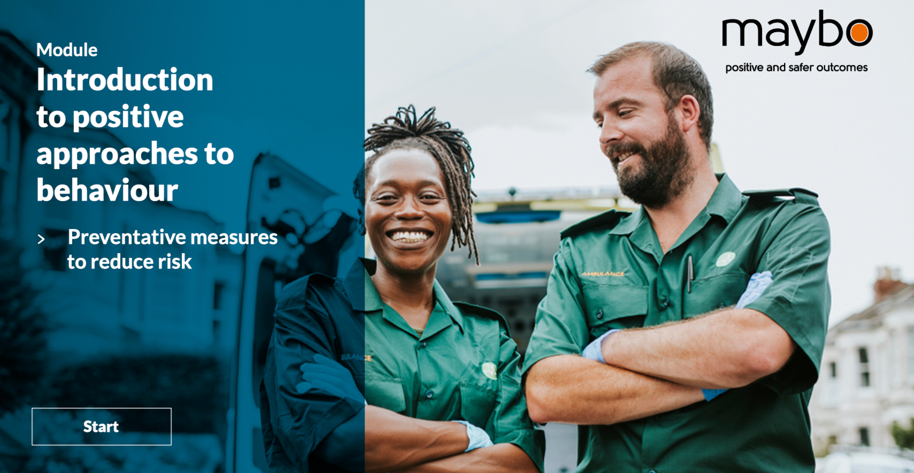
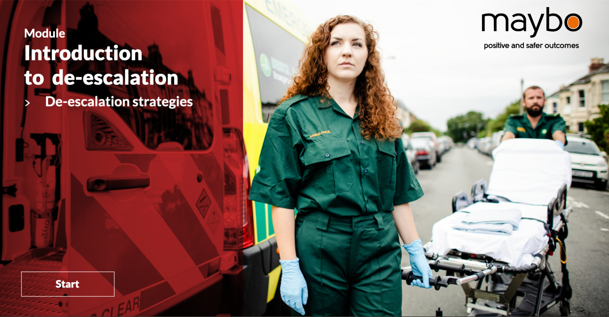
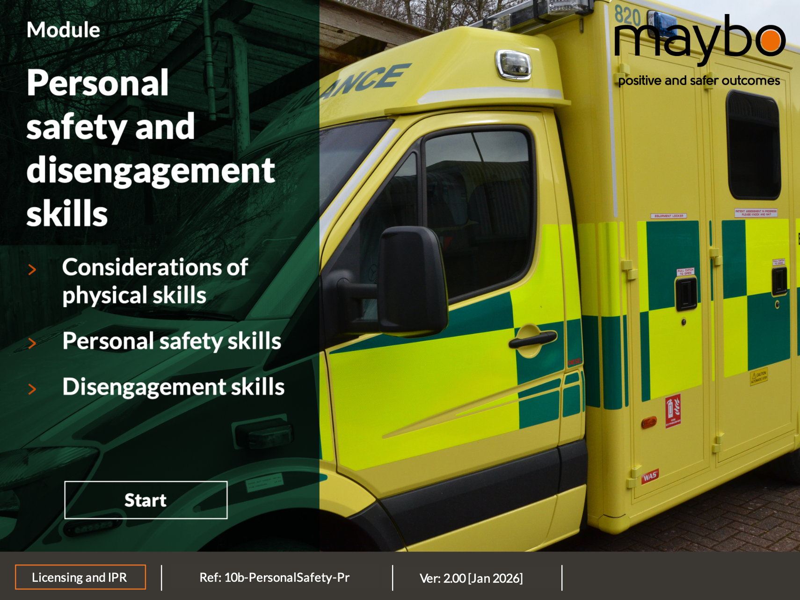
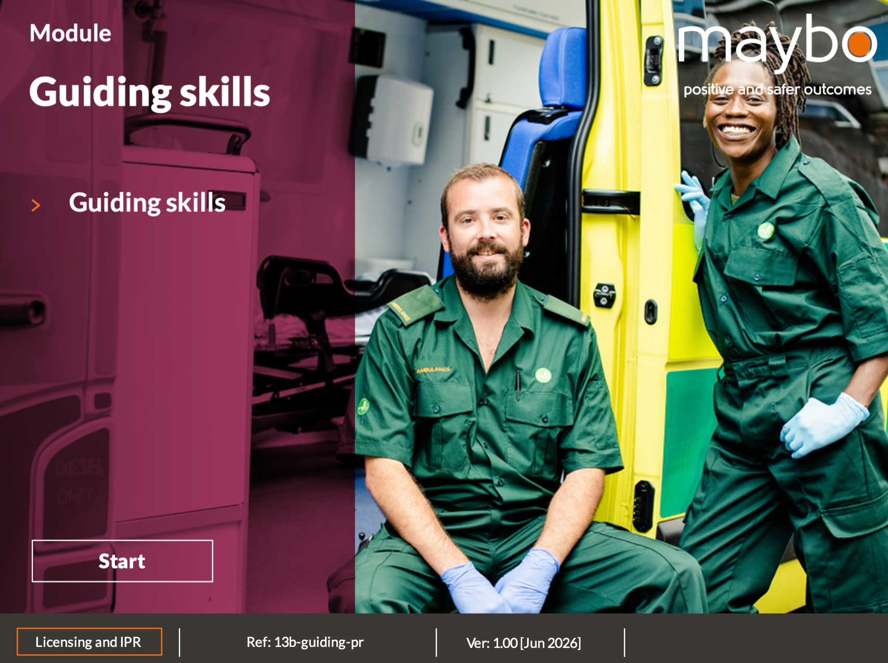
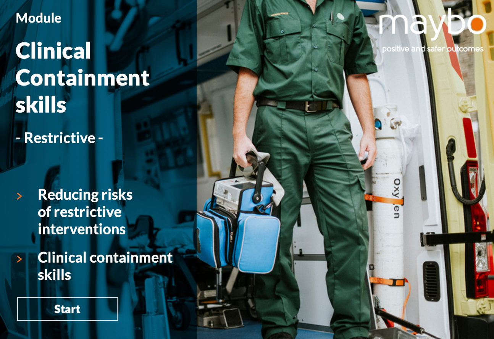
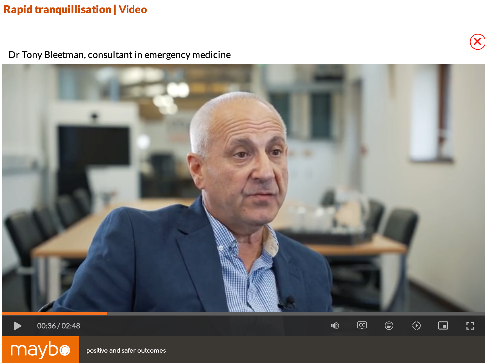

Prevent
Introduction to Positive Approaches to Behaviour
Understand behaviour, recognise instinctive reactions and identify preventative measures that reduce risk.
Trauma-informed behavioural safety and violence reduction training, designed specifically for ambulance services and built on more than 20 years of work alongside UK Ambulance Trusts.
This is not an off-the-shelf conflict management package adapted from another sector. It reflects the environments, decisions and pressures ambulance professionals actually face.
Early national collaboration around crew safety.
Working with trusts to understand when, where and why incidents occur.
A consistent approach shaped around ambulance work.
Wide implementation across UK Ambulance Trusts.
Ongoing innovation informed by frontline ambulance services.
Prevention, de-escalation, safety, guiding and clinical containment.
Many incidents are connected to distress, fear, confusion, pain, intoxication, cognitive impairment or mental health crisis. That never excuses violence—but it changes how risk can be reduced.
We do not begin with “How do we control this?”
We begin with “What is happening for this person?”
The programme is not trauma therapy. Its contribution is practical: safer interactions, less escalation, reduced unnecessary physical intervention and more proportionate, defensible decisions.
Physical intervention remains important.
But it sits at the end of the process—not the beginning.
Organisations can select the modules that match their risk profile, workforce and clinical responsibilities—building a coherent pathway rather than a collection of disconnected courses.

Understand behaviour, recognise instinctive reactions and identify preventative measures that reduce risk.

Practical strategies for slowing situations down and communicating under pressure.

Safer, lawful options for protecting staff when prevention and de-escalation are no longer enough.

Supportive, proportionate skills for movement and cooperation while preserving dignity and choice wherever possible.

Specialist content for reducing the risks associated with restrictive interventions when essential clinical care cannot otherwise be delivered. The emphasis remains on necessity, proportionality, least restriction and harm reduction.
The programme uses visual demonstrations and scenarios rooted in ambulance practice—from communication around a vehicle to patient movement, guiding and personal safety.

Specialist video content connects practical behavioural safety with clinical realities, helping staff understand risk, patient vulnerability and the consequences of restrictive or pharmacological intervention.
Dr Tony Bleetman
Consultant in Emergency Medicine
Give your teams the knowledge, confidence and practical skills to recognise risk earlier, reduce escalation and create safer outcomes for patients, staff and services.
Talk to Maybo about a programme matched to your service, risk profile and internal delivery model.